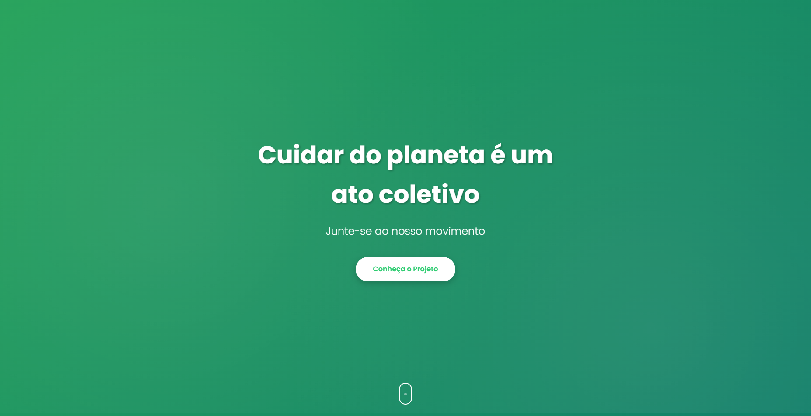

Portal Verde América - Sustentabilidade Empresarial
Página desenvolvida para apresentar o projeto socioambiental da América Serviços Automotivos LTDA,
reforçando impacto ambiental, ações sociais e engajamento da comunidade.
HTML5CSS3JavaScriptLanding PageResponsivo

O que é o projeto
O Portal Verde América é uma landing page institucional de impacto socioambiental. A proposta é
comunicar de forma clara e emocional a iniciativa de sustentabilidade empresarial, com foco na
destinação responsável de resíduos, apoio a cooperativas, contribuição para hospital de câncer
infantil e melhoria contínua das ações.
Tecnologias utilizadas
Estrutura: HTML5 semântico para organizar blocos e conteúdo.
Visual: CSS3 com variáveis, gradientes, sombras e layout responsivo.
Interações: JavaScript Vanilla para animações e navegação dinâmica.
Tipografia: Google Fonts (família Poppins).
Contato: Link direto para WhatsApp com wa.me.
Recursos técnicos implementados
Navegação de página única com âncoras internas e rolagem suave.
Animações de entrada com Intersection Observer.
Efeito parallax leve na hero section.
Hover interativo em cards de conteúdo.
Botão flutuante de WhatsApp com exibição condicional no scroll.
Efeito de digitação no título principal.
Estrutura pronta para lazy loading de imagens com data-src.
Debounce para otimização de eventos de alta frequência.
Arquitetura e organização
index.html: estrutura e conteúdo principal da página.
styles.css: identidade visual, animações e responsividade.
script.js: interatividade, observadores de scroll e efeitos dinâmicos.
README.md: documentação geral do projeto.
Galeria do projeto
Algumas telas utilizadas para demonstrar o visual e a estrutura da landing page.
Resumo executivo
Este projeto é uma solução estática, moderna e responsiva, construída com front-end puro, sem
dependência de frameworks. O foco principal foi combinar performance, clareza de mensagem e
engajamento social em uma experiência digital objetiva.